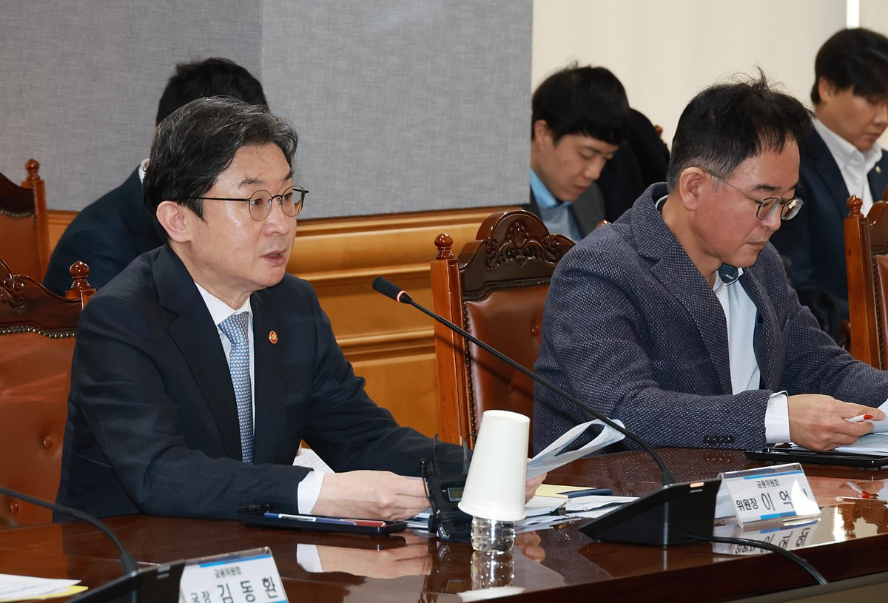
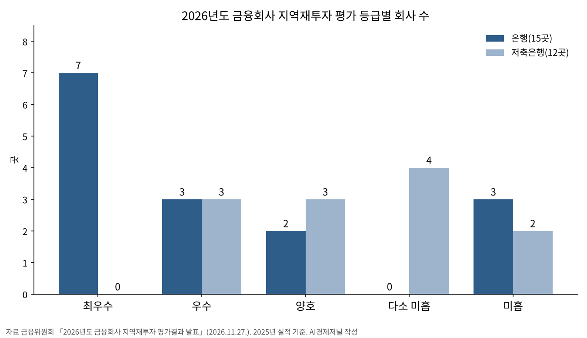
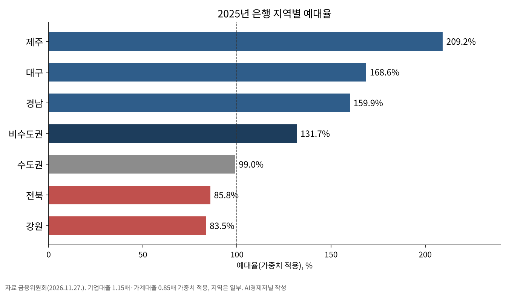

지역재투자 평가 최우수 은행 7곳, 씨티·SC·수협은 미흡
비수도권 은행 예대율, 같은 기준으로 1년 새 4.0%포인트 상승
은행권 최우수 비중 4년 평균 50%, 상대평가로 전환
수도권인 인천·서울·경기는 평가 지역 밖
AI경제저널=김갑봉 기자 | 금융위원회가 27일 지역재투자 평가위원회를 열어 2026년도 금융회사 지역재투자 평가 결과를 확정했다. 은행 15곳 가운데 7곳이 최우수, 3곳이 미흡 등급을 받았다.
최우수는 시중·특수은행 가운데 하나·아이엠·기업·농협은행, 지방은행 가운데 부산·광주·경남은행이다. 한국씨티은행, SC제일은행, 수협은행은 미흡이다. 저축은행 12곳 가운데 최우수는 없다.
금융위에 따르면 금융당국은 지역에서 예금을 받는 금융회사가 지역경제 성장을 돕도록 유도하려고 2018년 10월 이 제도를 도입했고, 2020년부터 평가했다. 올해가 7회째다.
평가 지역은 수도권을 뺀 13개 시·도다. 인천·서울·경기에서 금융회사가 낸 실적은 평가에 들어가지 않는다. 이번 평가는 2025년 실적을 바탕으로 했다.
은행 등급과 저축은행 등급

시중·특수은행 가운데 국민은행은 우수, 신한·우리은행은 양호다. 지방은행 가운데 제주·전북은행은 우수다. 한국씨티은행과 지방은행은 영업점이 있는 지역만 평가받는다.
저축은행은 예가람·한국투자·JT가 우수다. BNK·OK·SBI는 양호, JT친애·대신·애큐온·웰컴은 다소 미흡이다. 페퍼·OSB는 미흡이다. 저축은행 최우수는 지난해 1곳에서 올해 0곳이 됐다.

지역별 등급을 보면 SC제일은행은 강원·전남·경북에서 미흡을 받았다. 한국씨티은행은 경남에서 미흡, 부산·대구·대전·울산·충북에서 다소 미흡을 받았고 광주·제주에서는 양호를 받았다.
지난해 8월 발표한 2025년도 평가와 견주면 국민·전북은행이 최우수에서 우수로, 우리은행이 우수에서 양호로 내려갔다. SC제일·수협은행은 다소 미흡에서 미흡으로 내려갔다.
한국씨티은행은 지난해에도 미흡이었다. 지난해에는 금융위가 소매금융 철수로 신규 영업이 없다는 사유를 밝혔다. 올해 자료에는 사유가 없다.
저축은행 가운데 한국투자는 최우수에서 우수로, BNK·OK는 우수에서 양호로, JT친애는 양호에서 다소 미흡으로 내려갔다. 예가람은 양호에서 우수로, 대신·웰컴은 미흡에서 다소 미흡으로 올라갔다.
비수도권 은행 예대율 131.7%
예대율은 예금(수신) 대비 대출(여신) 비율이다. 금융위는 올해 평가부터 기업대출에 1.15배, 가계대출에 0.85배 가중치를 줘 예대율을 계산했다.
2025년 은행의 비수도권 예대율은 131.7%다. 지난해와 같은 기준으로는 128.1%로 1년 전 124.1%보다 4.0%포인트 높다. 수도권 예대율은 99.0%다.
새 기준 131.7%와 1년 전 124.1%의 차이는 7.6%포인트다. 이 가운데 3.6%포인트는 가중치를 새로 준 몫이다(AI경제저널 계산). 같은 기준으로 잰 상승 폭은 4.0%포인트다.
지역별 예대율은 제주 209.2%, 대구 168.6%, 경남 159.9%가 높다. 전북 85.8%, 강원 83.5%는 100%를 밑돈다.

은행의 비수도권 대출 증가율은 2025년 3.8%로 1년 전 4.7%보다 낮다. 수도권 대출 증가율은 6.0%에서 4.2%로 더 크게 떨어졌다.
중소기업 대출 증가율 2.0%, 점포 101.7개
은행의 비수도권 기업대출 가운데 중소기업 대출 비중은 96.3%다. 수도권은 81.6%다. 금융위는 개인사업자 대출 실적에 1.5배 가중치를 줬다.
비수도권 중소기업 대출 증가율은 2.0%로 1년 전 3.3%보다 낮다. 수도권은 4.4% 증가에서 1.4% 감소로 돌아섰다. 금융위는 비수도권의 하락 폭이 더 작았다고 밝혔다.
서민대출은 새희망홀씨와 신용평점 하위 50% 중·저신용자의 비보증부 신용대출이다. 가계대출 가운데 서민대출 비중은 비수도권 은행 1.81%로 1년 전 1.95%보다 낮고, 수도권은 1.33%다.
인구 100만명당 은행 점포 수는 비수도권 101.7개, 수도권 111.5개다. 비수도권은 2023년 102.6개, 2024년 102.5개였다. 금융위는 비수도권 감소세가 수도권보다 완만하다고 밝혔다.
저축은행의 평가 지역은 비수도권 가운데 저축은행별 영업구역이다. 이 지역 저축은행 대출은 1년 전보다 5.9% 줄었다. 2024년 17.6% 감소보다 폭이 작다.
평가 지역 예대율은 150.4%, 중소기업 대출은 16.3% 감소다. 저축은행 서민대출은 햇살론·사잇돌Ⅱ·무보증 자체 중금리 대출이다. 가계대출 가운데 이 비중은 31.4%로 1년 전 24.8%보다 높다.
최우수 비중 4년 평균 50%, 상대평가로
금융위는 은행권 최우수 비중이 최근 4년 평균 50%에 이르러 평가의 변별력이 떨어졌다고 밝혔다. 15곳 가운데 최우수는 2023년 6곳, 2024년 8곳, 2025년 9곳, 2026년 7곳이다.
금융위는 최종 등급을 절대평가에서 상대평가로 바꾸기로 했다. 최우수 1곳, 우수 4곳, 양호 5곳, 다소 미흡 3곳, 미흡 2곳으로 순위에 따라 등급을 준다.
예대율 항목에서 만점을 받은 비중은 87%, 중소기업·개인사업자 대출 비중 항목은 93%였다. 금융위는 두 항목도 상대평가로 바꾼다. 평가의 실효성을 높이려는 조치라고 밝혔다.
서민대출 배점은 100점 가운데 15점에서 20점으로 늘리고, 인프라 배점은 15점에서 10점으로 줄인다. 금융위는 취약계층 자금 공급을 늘리려는 조치라고 밝혔다.
금융감독원 경영실태평가에서 지역재투자 평가 배점은 지금 100점 가운데 경영관리 적정성 부문 10점 안의 0.35점이다. 금융위는 반영 비중을 늘릴 예정이다.
금융위는 내년부터 시범 운영하는 포용금융 종합평가에 지역재투자 평가 결과를 반영하는 방안도 검토한다. 은행의 지역재투자 활성화를 위해 인센티브를 강화한다는 설명이다.
금융위는 2028년 평가부터 3년 동안 「5극 3특 지역 핵심 중소·중견기업 보증부대출」 공급 실적에 가점을 줄 계획이다. 이 사업은 3년간 4조5000억원 규모다.
이 사업에 참여할 지자체를 고를 때는 지자체가 금고 지정 기준에 지역재투자 평가 결과를 반영했는지도 고려할 계획이다. 은행권 특별출연, 신용·기술보증기금 보증, 지자체 이자 보전을 묶은 사업이다.
미국 지역재투자법 연구
미국 연방준비제도에 따르면 1977년 제정한 지역재투자법(CRA)은 감독기관이 금융기관에 영업 지역의 신용 수요를 채우도록 권장하게 한다. 저소득·중간소득 지역도 대상이다.
닐 부타(Neil Bhutta)는 1994년 이후 이 법이 대상 계층·지역 대출에 미친 효과를 분석했다. 논문은 2011년 『법경제학저널』에 실렸다.
부타는 평균적으로 이 법이 주택담보대출에 미친 영향이 작았다고 밝혔다. 1990년대 말~2000년대 초 대도시권에서는 유의한 효과를 찾았다. 법의 구속력이 가장 컸을 수 있는 때와 곳이다.
부타는 이 결과가 정보 외부성이 신용 공급을 누를 수 있어 신용시장에 정부가 개입할 근거가 될 수 있다는 생각과 맞는다고 밝혔다.
참고문헌
- Bhutta, N., 「The Community Reinvestment Act and Mortgage Lending to Lower Income Borrowers and Neighborhoods」, 『Journal of Law and Economics』 54권 4호, University of Chicago Press, 2011, 953~983쪽, https://doi.org/10.1086/661938
- "2026년도 금융회사 지역재투자 평가결과 발표", 금융위원회 은행과·중소금융과, 2026.11.27., https://www.fsc.go.kr/no010101/88261
- "2025년도 금융회사 지역재투자 평가결과 발표", 금융위원회 은행과, 2025.08.27., https://www.fsc.go.kr/no010101/85178
- "지역이 발굴하면 금융이 뒷받침한다. 지역 핵심 중소·중견기업에 4.5조원 공급", 금융위원회, 2026.11.17., https://www.korea.kr/briefing/pressReleaseView.do?newsId=156789570
- "What is the Community Reinvestment Act (CRA)?", Board of Governors of the Federal Reserve System, 2026.11.28. 확인, https://www.federalreserve.gov/consumerscommunities/cra_about.htm
[사진 출처]
- [사진 1] 금융위원회 사진뉴스 「금융위원장, 제8차 포용적 금융 대전환 회의 주재」(2026.11.26.), https://www.fsc.go.kr/no010106/88247
※ 이 기사는 AI 프로그램 클로드를 활용해 작성했습니다.
관련기사
- 지역재투자 평가 최우수 은행 7곳, 씨티·SC·수협은 미흡
- 지역 중소·중견기업 보증부대출 1차 3조7400억원
- 기준금리 3.25%로 0.25%포인트 인상, 새 가계대출 76%는 변동금리
저작권자 © AI경제저널 무단전재 및 재배포, AI학습 및 활용 금지